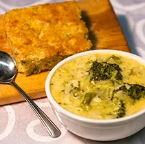
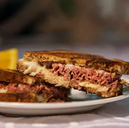
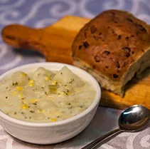
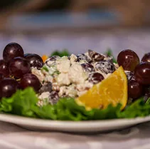
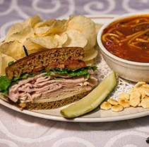
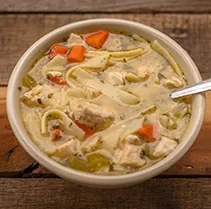

Oak Ridge · Knoxville · Alcoa · Madisonville
Eight homemade soups a day, and the bread to go with them.
With over four decades of mastering their signature soup recipes, The Soup Kitchen makes its soups, breads, deli and grilled sandwiches, salads and desserts in-house from scratch daily.
Monday to Friday, 11 AM to 7 PM. Soups change every day and popular ones sell out, so call ahead.
On the stove
Today's soups
Each kitchen's own board, as posted Monday, October 12. Full menu, descriptions and prices.
Oak Ridge
Monday 10/12- Chili
- Hearty Vegetable
- Chicken Noodle
- Gratin Savoyard
- Loaded Potato
- Chicken Chowder
- Tomato Cheddar
- Louisiana Rice
Call (865) 482-3525 to check what's left.
Knoxville
Monday 10/12- ChiliGF
- VegetableGF
- Potato Bacon
- Cheeseburger Mac
- Gratin Savoyard
- Chicken Noodle
Cup $5.59 · Bowl $6.59
Call (865) 539-9864 to check what's left.
Alcoa / Maryville
Monday 10/12- ChiliGF
- VegetableGF
- Tomato Basil
- Chicken Noodle
Cup $5.59 · Bowl $6.59
Call (865) 233-5956 to check what's left.
Madisonville
Menu headed Oct. 12- ChiliGF
- VegetableGFVEG
- Potato Bacon
- Mushroom Gratinee
- Spaghetti Supreme
Cup $5.59 · Bowl $6.59
Call (423) 545-9510 to check what's left.
Out of the oven
A wide variety of homemade breads and desserts
Cheese bread, brown bread, plain cornbread and Mexican cornbread, baked fresh. Madisonville rotates specialty loaves too: black olive, honey oat, apple nut, jalapeno cheddar, cranberry, cinnamon raisin and orange poppyseed.
Soup, sandwich, something sweet
Chili with cheddar 
Broccoli cheddar and cornbread 
Reuben on marble rye 
Potato soup and brown bread 
Chicken salad, grape pecan 
Turkey deli sandwich 
Chicken noodle Red velvet cake
From the regulars
What folks say, word for word
“Everything is so delicious, fresh and homemade. Best vegetable soup I've ever had! The ladies who work there are so sweet. We had a large group and they were very helpful and accommodating. Everyone in our group had delicious soup and sandwiches. I can't wait to go back again!”
Rebecca Stone · Google review, Oak Ridge, a year ago
“The special with grilled cheese, chips, and a bowl of soup is an insane value. Cheese bread is fantastic too! Ladies are always sweet regardless of how crowded”
Jimmy Kennedy · Google review, Knoxville, a year ago
“I had a Reuben sandwich here that was literally the best I've ever had. … This place isn't fancy. But it doesn't matter, because the people are friendly and accommodating, the food is fresh and good, and the other clientele are a pleasure to be around.”
Cyndi Rodi · Google review, Madisonville, 5 months ago
“Soups hot and delicious. Sandwiches are also worth the stop. Service is really fast. … Don't let a line scare you off they get to people really quickly and Seating opens up quickly.”
Alicein Thearea · Google review, Alcoa, 9 months ago
“Everything I’ve had is great, but you have to come on Wednesdays and try the soft shell crab soup. It’s like I just ordered a fresh crab dish off the boardwalk, it tastes so good.”
Zack Hlatky · Google review, Oak Ridge, a year ago
“They have a great selection of soups, but they are also very delicious. I have not experienced them running out of the daily selections, even coming in a half hour before closing. The Mexican corn bread is perfect and I suggest you give it a try.”
Lauren Pluto · Google review, Knoxville, a month ago